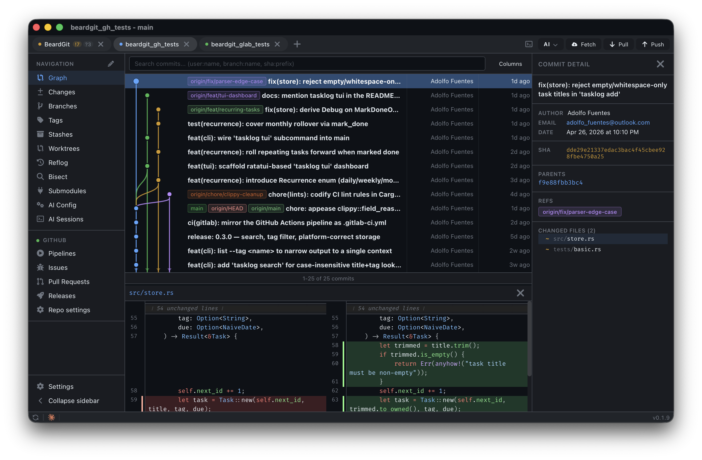
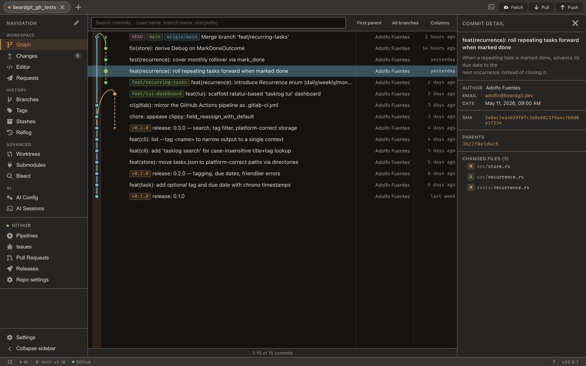
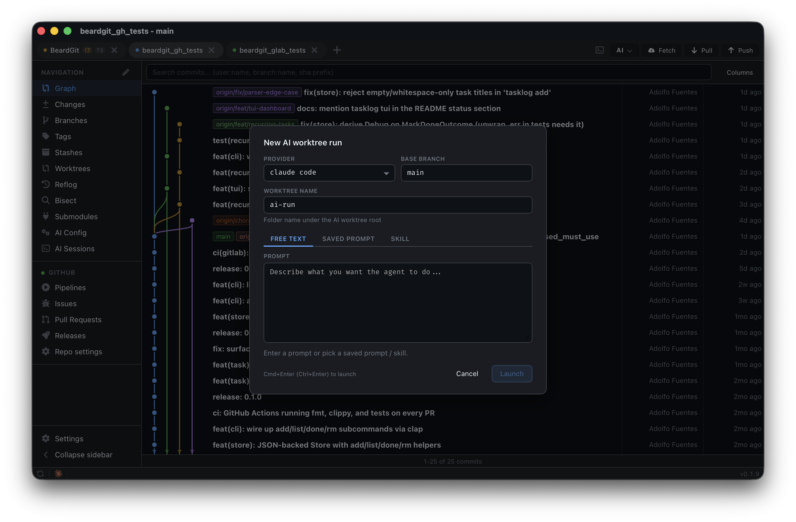
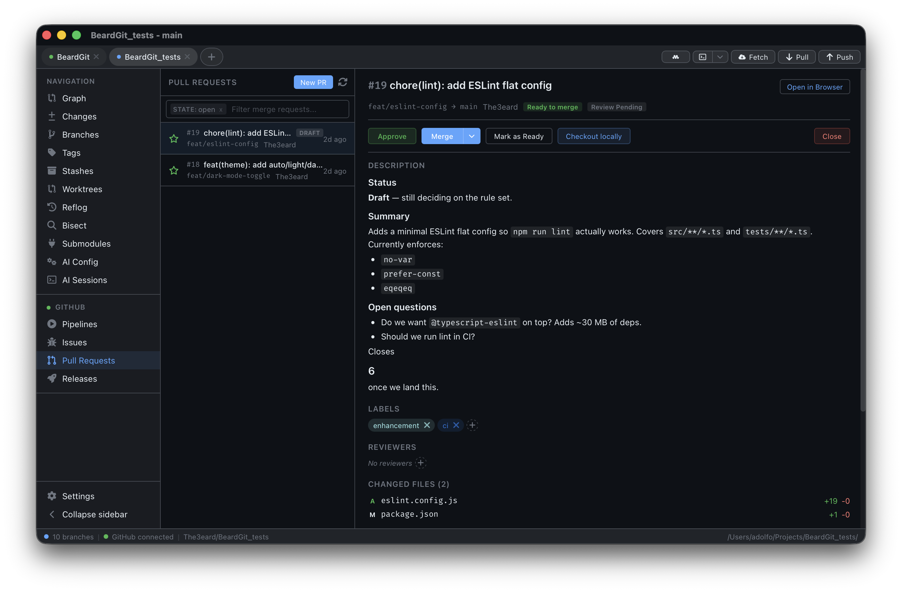

Graph, branches, staging, PRs & MRs, issues, CI/CD pipelines, releases, terminals, and AI agents — in a single native app. Stop jumping between GitHub, GitLab, the terminal, and three other clients just to ship a commit.
100K+ commits render smoothly via a viewport-sliced renderer. Branch lanes, merge curves, sync-state lines, and author highlighting — all on HTML canvas, not DOM.
Every repository is a tab. Heavy state — repo, layout, file watcher — loads only for the active tab; background tabs keep just their metadata.
Create, edit, merge, approve, and comment on PRs/MRs. Manage issues, labels, milestones, assignees. Trigger and retry pipelines. Publish releases — without leaving the app. gh and glab ship bundled.
BeardGit drives your local install of Claude Code, Codex, or OpenCode in a fresh git worktree — no terminal, no key juggling. You keep the CLI you already configured; the app just spawns it, queues runs, and pipes the transcript back in-app. More providers will follow.
# Cmd+Shift+A — pick prompt + provider + worktree root AiBackgroundCoordinator::queue(run) // FIFO .launch("claude-code", "--print --stream-json") .in_worktree(".beardgit/ai-worktrees/<id>") .cap(3) // concurrent runs
Pick the good commit, pick the bad commit, step through with buttons. Visual runner pairs with the bundled CLIs and the AI worktree flow — no terminal juggling.
gh and glab ship inside every installer. No PATH setup. Run them in a PTY terminal inside the app, or let BeardGit call them for you.




A taste of what ships built-in. The full cheat sheet is one keystroke away — press ? inside the app. Modifiers shown for macOS; on Linux/Windows ⌘ reads as Ctrl.
Builds are currently unsigned, so your OS will block the first launch. Grab the installer for your platform, approve the app manually once, and it runs like any other native app. The per-platform workarounds below are temporary and will go away as soon as code-signing is in place. gh and glab ship bundled — no PATH setup.
.dmgRust + Node + Tauri 2. Full setup and platform prerequisites live in the README. Licensed CC BY-NC-SA 4.0.
claude-code, codex, or opencode, which already have their own auth in your home directory. The app spawns the CLI in a fresh worktree and pipes the transcript back — your tokens never touch BeardGit's storage.